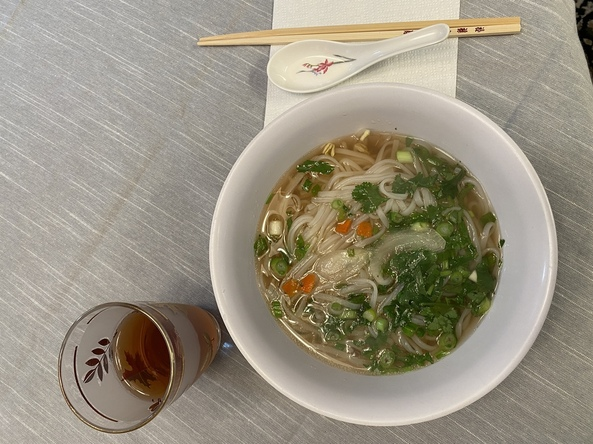

Phō Recipe

Description
Phō is a popular Vietnamese soup. My grandmother and mother made it for me growing up,
and now it's my turn to share it!
It's expected that each person adapts their bowl to their taste.
Consider trying everything. There's no social rule like in French
cuisine suggesting it's rude to heavily change your bowl, even before tasting.
Make it yours!
Ingredients
- Phō broth
- Rice noodles
- Beef flank steak
- Bean sprouts
- Cilantro
- Green onion
- White onion (optional)
- Carrot (optional)
- Lime
- Jalapeño
- Thai basil
- Hoisin sauce
- Sriracha
Steps
- Finely chop cilantro and green onion (together).
- Prepare serving plate:
- Cover plate 2/3 with bean sprouts
- Slice jalapeños. Add to plate.
- Slice limes. Add to plate.
- Remove extra stalk from basil. Add to plate.
- Prepare broth:
- Cut 1/4 white onion into wedges.
- Finely chop 1/4 carrot (or use Mama brand seasoning packet).
- Simmer broth. Add vegetables for taste, not to serve.
- Cook rice noodles:
- Boil water.
- Add rice noodles.
- Push down until submerged.
- Reduce to medium heat.
- Cook 7-8 minutes further.
- Strain under cold water.
- Cook beef strips (if desired):
- Cut flank steak into 2-2.5” wide segments.
- Slice each segment into 5 mm thick strips.
- Boil 1 qt water per pound of beef.
- Add strips.
- Cook 2-3 minutes until rare or medium-rare.
- Prepare bowls:
- Add bean sprouts.
- Add rice noodles.
- Reheat in microwave.
- Add cilantro and green onion.
- When ready to serve, add broth.
- Add beef strips (if desired).